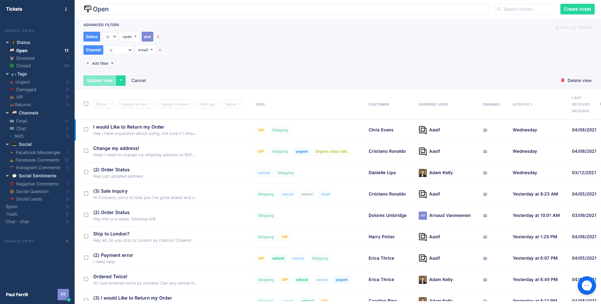

With so many options, choosing the best help desk software for your business can seem daunting. To create the best employee and customer experience possible, we’ve created a list of the top 8 help desk software you should consider for 2023.
Our list will give you a thorough understanding of how you can manage your customer communication with omnichannel support and find the right platform for your business that will streamline communication and workflow.
What is help desk software?
Help desk software is a tool for managing, organizing, and responding to service-related requests. Some help desks are used for customer support, while others are used for internal team member requests. By creating tickets from support queries, help desk software allows agents to track the progress of these tickets, prioritize urgent issues, and respond accordingly.
There’s no question that help desk software provides many benefits for businesses, and some of these include:
- Streamlining processes and communication
- Reducing workload
- Automating manual tasks
- Maintaining standards
- Improving the security of your IT network
- Improving employee and customer experience
- Faster resolution of customer difficulties
- Measuring performance
- Sharing surveys
Help desk is an omnichannel tool that helps businesses deliver a seamless customer experience and makes it simple to monitor support agents’ performance. Since this software streamlines interactions, it creates faster, more efficient communication. Check out our other blog if you’re looking for more information on help desk support.
The best help desk software in 2023
Freshdesk
Freshdesk is a user-friendly cloud-based customer service software designed to facilitate and improve support. Freshdesk is popular for its cost-effective capabilities to increase efficiency and to enhance consumer self-service.
Freshdesk is simple to set up, and the ability to customize experience, workflow, automations, users, and more enables users to tailor it to their particular requirements. This help desk software is most commonly used by mid-sized businesses of 51-1,000 employees, though companies of all sizes can benefit from its features.
Pros:
- Freshdesk has a free tier and a question-based query tool.
Cons:
- Freshdesk can take up to 3 months to set up, and many extended features require an upgrade to the highest pricing.
Notable features:
- Support channels include chat, email, phone, social media, web, and WhatsApp.
- Productivity hacks include tagging, scheduling, automatic email notifications, canned responses, and customization.
- Management comes with public and private notes, ticket activities, team inbox, to-dos, time tracking, and ticket merging.
- A self-service knowledge base
- Analytics and reporting
- Service level agreements (SLA) management
- Artificial intelligence (AI) and chatbot capabilities
- Customer satisfaction ratings
Pricing: A free plan is available with up to 10 agents. Paid ‘Growth’ plans start at $15/agent/month. You can try Freshdesk for 21 days before committing.
Help Scout
Help Scout combines customer support software with customer relationship management (CRM) into one software-as-a-service (SaaS) solution. The easy-to-use interface is excellent for delivering cross-channel support, personalization, and self-service options.
The Help Scout Beacon function enables customers to get assistance without leaving the page they’re on within your website. Help Scout Beacon functions like a search box and displays on every page of your website so customers can browse your knowledge base without going to the “help” page. This help desk is ideal for small to medium-sized businesses who do not want an overly complicated or pricey software.
Pros:
- Help Scout is strongly suited for personalization, has an excellent tagging system, and onboarding is easy.
Cons:
- Help Scout lacks flexibility in user permissions, and the knowledge base can be difficult to edit.
Notable features:
- 75+ keyboard shortcuts
- Shared inbox
- Templated responses
- Website live chat
- Create manual or automatic workflows
- Target your audience
- Out-of-the-box reporting
- Knowledge base content management
Pricing: The Standard plan is $20/user/month with Plus and Pro options for additional features. Help Scout also offers a 14-day free-trial.
Zendesk
Zendesk links your team with customers across channels, including social media, chat, email, and phone. This help desk software is an open and flexible platform that you can scale, extend, and optimize as your needs change.
Zendesk’s web-based help desk IT solution enables support staff to work together and exchange information using confidential comments on any potential issue. It also shows real-time information on who is currently examining a ticket. Businesses of all sizes can benefit from Zendesk, though it may not be fit for smaller businesses.
Pros:
- Zendesk has a large marketplace of apps and integrations, is highly customizable, has comprehensive reporting, and query tooling.
Cons:
- Zendesk has steep entry-level pricing and only enterprise levels let you customize pre-built dashboards.
Notable features:
- Real-time updates
- Integrated voice software
- Self-service options
- Automated routing
- Multi-language support
- Live chat and messaging
- Collaboration tools
- Custom views
Pricing: Suite Teams start at $49/agent/month. Zendesk offers a 14-day free-trial.
Gorgias
Gorgias is an all-inclusive support desk platform developed specifically for online retailers. By combining interactions from channels, including voice, SMS, chat, email, and social media, the software builds a linked customer journey that records these encounters into unique customer histories.
Gorgias is specifically for eCommerce businesses and better suites those with smaller teams. The interesting thing about Gorgias is that you only have to pay for the tickets you respond to through Gorgias, not for each message you receive. With unlimited users, this help desk can be a great option for smaller businesses looking to automate support and turn customer interactions into a sales opportunity.
Pros:
- Gorgias has the ability to have unlimited users, it is a good value for the price, and it offers unique features for eCommerce orientation.
Cons:
- Gorgias is only applicable to eCommerce customers and pricing could impact high call volume customers.

Notable features:
- Customer database
- Canned responses
- Surveys and feedback
- @mentions
- Real-time consumer-facing chat
- Unlimited users
- Up to 150 integrations for the basic plan
- Performance management
Pricing: With ticket-based pricing, the Starter Gorgias plan starts at $10/month for 50 tickets and increases up to $900 monthly for 5,000 tickets. Custom tickets jump to the Enterprise plan and will require reaching out to Gorgias. Try Gorgias for free for 14 days.
Intercom
Intercom is an all-in-one help center for chatbots, self-serve support, tickets, routing, reporting, and more. Intercom is the Engagement OS, an open channel between your business and your customers that allows you to maximize every interaction across the customer journey– in product, in the moment, and on their terms.
Intercom’s clean and modern interface makes it simple to offer valuable onboarding tools and reliable support. Its flexible business messenger is centered around proactive sales and marketing. Because businesses can choose to pay for only what they need, Intercom can be beneficial for businesses of all sizes.
Pros:
- Intercom has advanced automation options, you can gather customer events from external systems, and Intercom offers marketing and support functions.
Cons:
- Intercom has complicated pricing. It is not the most affordable option, and it is not as robust as other solutions.
Notable features:
- Code-free chat bots
- Customer database
- Campaign builder
- Personalization at scale
- Collaborative inbox
- Live chat
- Product tours
- 2-way SMS
Pricing: For small businesses, Intercom offers $74/month pricing when billed annually. Other pricing will require reaching out to Intercom for customized quotes. Intercom offers a 14-day free trail.
Front
Front is a customer communication hub that connects to communication channels, including email, SMS, WhatsApp, social media, live chat, and more. With a strong customer database, Front is great for support, operations, and account management teams.
As a multi-channel solution, Front has been designed to automate workflows with its email-like interface. Because of the limit on users in the pricing model, this help desk software is best fit for smaller businesses.
Pros:
- Front offers internal commenting and robust integrations, including calendar.
Cons:
- Front’s starter plan does not offer many features and their Scale plan is steep.
Notable features:
- Multi-channel messaging
- Live chat
- Team collaboration
- Calendar and one-click meeting scheduling
- Basic automation
- CRM integration
- Security and compliance
- Personalization
Pricing: Starting at $19/person/month, with a minimum of 2 users and a maximum of 10 users. Their top ‘Scale’ category goes up to $99/user/month with a minimum of 10 users. Front offers a 7-day free trail.
Kustomer
Kustomer is a CRM software that offers omnichannel messaging, a unified customer view, and AI-powered automations. Agents have access to a complete view of every customer, no matter which platform they reach out on.
Kustomer delivers seamless support around the clock across all digital channels for a truly hyper-personalized customer experience. This software can benefit businesses of various sizes, though it is important to note that the starter plan is capped off at 10 users.
Pros:
- Kustomer has robust integrations, does not require any extra RAM or processing power, and no chat is left abandoned.
Cons:
- Kustomer’s interface can seem intimidating, abandoned chat data is limited, and it does not offer mobile compatibility.
Notable features:
- Voice and personalized interactive voice response (IVR)
- Enhanced CRM controls
- Collaboration
- Reporting and analytics
- Knowledge base
- Sentiment analysis
- Segment customers based on data
- Shortcuts
Pricing: Plans start at $29/month/user and their enterprise plans go up to $139/month/user. Kustomer offers a 14-day CRM free trial.
Salesforce
Salesforce is a cloud-based software designed to help businesses find more prospects, close more deals, and wow customers with amazing service. Their complete suite of products (Customer 360) unites sales, service, marketing, commerce, and IT teams with a single, shared view of customer information.
Salesforce offers Trailhead to guide and grow small businesses and startups. It is an excellent solution for small businesses looking to manage relationships and interactions with current and potential customers.
Pros:
- Salesforce offers mobile connection, it caters to all business needs, and has a lengthy trail period.
Cons:
- Add ons to Salesforce plans can be pricey, the interface is not as user-friendly as alternatives, and it can be difficult to customize.
Notable features:
- Process and sales automation
- Account and contact management
- Analytics and reporting
- Mobile CRM solutions
- Comprehensive sales forecasting
- Lead management
- Customer database
- Sales collaboration
Pricing: Salesforce starts at $25/user/month and can cost $1,250 for up to 10,000 contacts. Salesforce offers a free, 30-day trail.
Which is the best help desk software for your business?
Your business and your customers have their own specific needs. While we cannot offer you a flat out answer to which help desk is best, we do suggest narrowing your options down based on pricing, integrations you need, number of agents, and if the help desk software offers scalability. From your narrowed down list, it’s a good idea to take advantage of the free trails that all of these help desks offer to learn for yourself how easy - or difficult - its usability is, if the onboarding process is something that your whole team can handle, and what value it offers.
For a beginner-friendly guide to help desk software, check out our other article!
Integrate your help desk with Influx
Our teams work on demand to provide 24/7 support with all management and training included. Our platform connects to all major help desks. Ready to launch in one week, Influx gives you scale-up capacity and provides flexibility across any channel. Learn more!